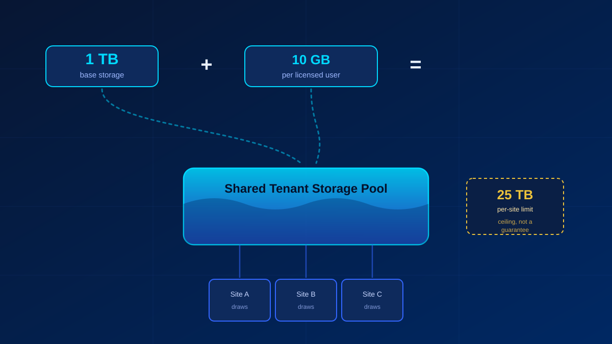
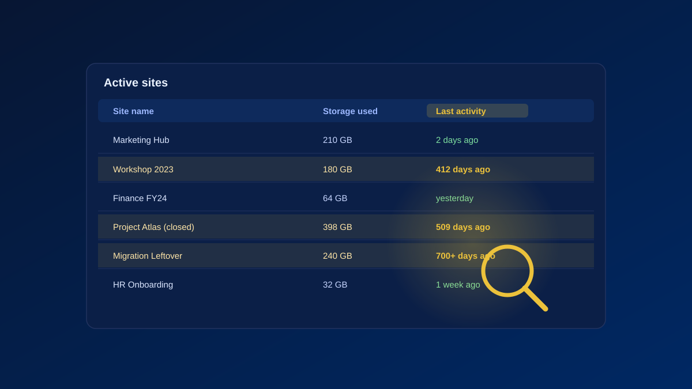
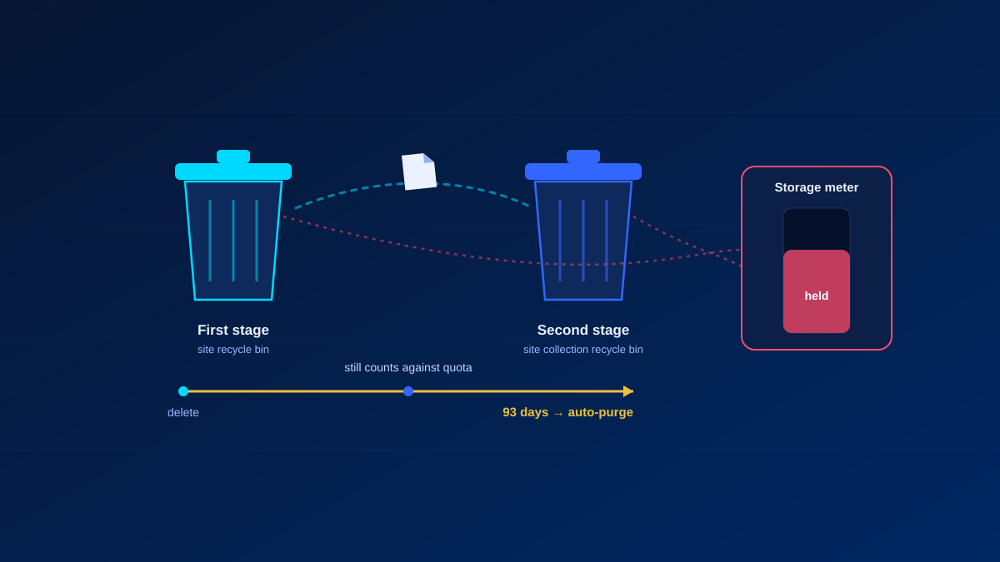
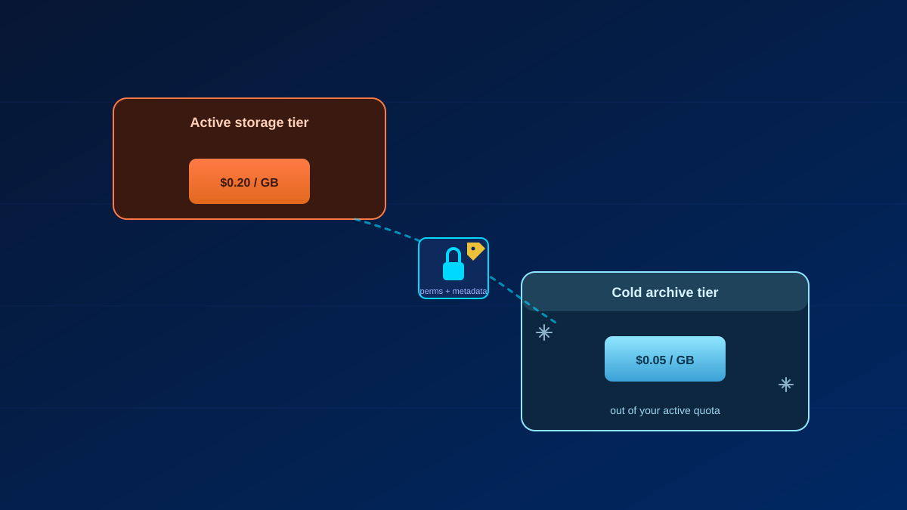
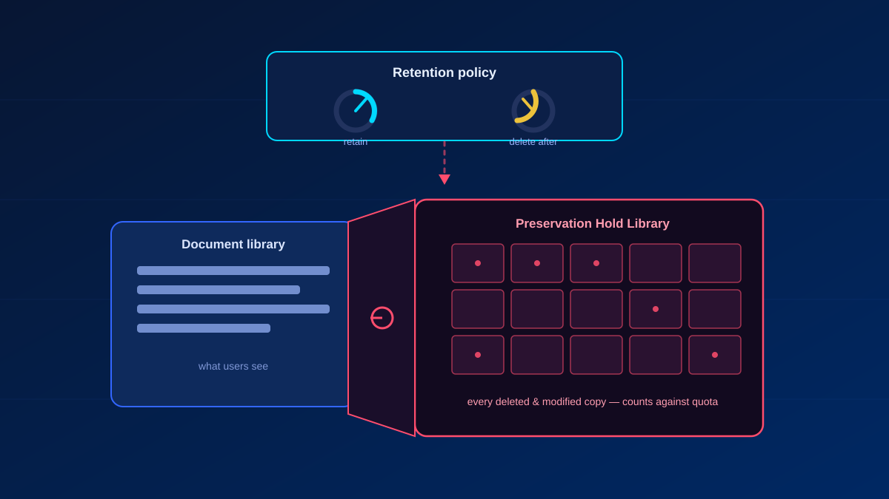

A 300-seat tenant I reviewed recently had 4 TB of pooled SharePoint storage — and sat at 96% capacity. New file uploads over the last twelve months: roughly 400 GB. The rest was version history, two stages of recycle bin nobody ever emptied, and a Preservation Hold Library that had quietly grown to 1.1 TB because a retention policy from 2022 was still holding everything forever.
That pattern repeats in almost every tenant. SharePoint storage rarely fills up because people create too much content. It fills up because of what SharePoint keeps behind the content. And with Microsoft's new pay-as-you-go billing for extra SharePoint storage, every gigabyte of bloat now translates directly into a monthly invoice line. This guide covers what actually counts toward your quota and six practical ways to reclaim it — before finance asks why the M365 bill went up.
How SharePoint Storage Is Actually Calculated

The formula is simple: 1 TB base storage + 10 GB per licensed user, pooled across the whole tenant. A 100-user tenant gets 2 TB total. Every SharePoint site draws from that shared pool, and while a single site can technically grow to 25 TB, that only works if the pool has room. The 25 TB is a ceiling, not an allocation.
What most admins underestimate is what counts against that pool. It is not just documents in libraries. Version history counts — every single version, in full. Both recycle bin stages count until items are permanently purged. List attachments, site pages, and site assets count. And the Preservation Hold Library counts, which is the one that hurts, because nobody sees it in the UI.
A 5 MB PowerPoint with 100 versions consumes 500 MB. Multiply that across a document library where marketing has been iterating on the same deck since 2021, and you understand where your terabytes went.
1. Find and Delete Stale Content

Start where the biggest wins usually are: entire sites nobody uses anymore. Old project sites, sites from Teams that were created for a workshop in 2023, migration leftovers. The SharePoint admin center shows a Last activity column under Active Sites — sort by it and the candidates surface immediately. The site usage reports in the Microsoft 365 admin center add file activity and storage trends on top. If your tenant is full of these, the same hunt applies to orphaned Teams private channel sites, which accumulate silently.
For anything at scale, PowerShell is faster:
Connect-SPOService -Url https://yourtenant-admin.sharepoint.com
Get-SPOSite -Limit All | Select URL, LastContentModifiedDate, StorageUsageCurrent | Sort StorageUsageCurrent -DescendingSorting by storage usage instead of just date matters. A dormant 2 GB site is a footnote. A dormant 400 GB site is your project.
2. Empty Both Recycle Bin Stages

Deleted does not mean gone. Files move to the first-stage recycle bin, then to the second-stage (site collection) recycle bin, and occupy quota for up to 93 days combined before SharePoint purges them automatically. After a large cleanup or migration, that means your reclaimed space stays locked for three months — unless you purge manually.
The second-stage bin hides under Site Settings → Site Collection Administration → Recycle Bin. Or you skip the clicking entirely:
Connect-PnPOnline -Url https://yourtenant.sharepoint.com/sites/yoursite -Interactive
Clear-PnPRecycleBinItem -ForceOne caveat from practice: coordinate this with the site owners first. The recycle bin is the only self-service restore users have. Purge it the day after someone deleted the wrong folder and you will hear about it.
3. Get Version History Under Control
Version history is the classic silent consumer. SharePoint's intelligent versioning now thins out version retention automatically — keeping recent versions dense and aging older ones out — which solves the problem going forward. It does nothing about the versions already sitting in your libraries.
For that, Microsoft provides version trimming via PowerShell, targeting whole sites, individual libraries, or OneDrive accounts. Be aware of what you are doing here: trimmed versions bypass the recycle bin and are unrecoverable. No undo, no second stage, nothing. Run a report first, trim second, and document the decision — especially in environments with compliance requirements.
4. Archive Inactive Sites Instead of Deleting Them

Not everything stale can be deleted. Finished projects, department archives, anything with retention value — that content needs to stay, just not at active-storage prices. Microsoft 365 Archive moves sites to a cold storage tier fully in place: no data migration, permissions and metadata preserved, sites become read-only and disappear from the active list. For the full picture on where this is headed, see my deep dive on file-level archiving in SharePoint.
The key detail: archived storage no longer counts against your SharePoint quota. For tenants bumping against their pool limit, archiving a handful of large legacy sites is often the difference between buying extra storage and not. Reactivation works without data loss if a site turns out to be needed after all.
5. Retention Policies — and the Hidden Library They Feed

Retention policies in Microsoft Purview cut both ways for storage. Configured well, they are your automation layer: a policy that deletes content five years after last modification keeps old project files from accumulating forever, without anyone lifting a finger. Configured carelessly, they are the reason your storage never shrinks no matter what you delete.
The mechanism behind that is the Preservation Hold Library (PHL) — a hidden system library on every site under retention. Delete or modify a file covered by a hold, and SharePoint quietly preserves a copy in the PHL. That copy counts fully against your quota, and users cannot see or touch it. In the tenant from my opening example, a blanket "retain indefinitely" policy from a long-gone compliance project had turned the PHL into the single largest storage consumer.
You can inspect it directly:
https://yourtenant.sharepoint.com/sites/yoursite/PreservationHoldLibrary/Forms/AllItems.aspxThe fix is rarely technical. Review your existing retention policies against actual compliance requirements, retire the ones nobody can justify anymore, and scope the rest properly. Two notes for the rollout: policy enforcement can take up to a week, and a delete-after-X-years policy will immediately and permanently remove everything already older than X the moment it kicks in. Communicate that before you hit submit, not after.
Key Takeaways
- Know your formula: 1 TB + 10 GB per user, pooled tenant-wide. Versions, recycle bins, and the PHL all count against it.
- Biggest wins first: sort sites by storage usage, not just by last activity — then delete, archive, or clean up in that order.
- Recycle bins hold space for 93 days — purge manually after large cleanups, but coordinate with site owners.
- Intelligent versioning is forward-looking only. Existing version bloat needs trimming, and trimming is permanent.
- Microsoft 365 Archive takes inactive sites out of your quota without deleting anything.
- Audit your retention policies. The Preservation Hold Library is where forgotten holds go to eat terabytes.
- With pay-as-you-go storage billing now available, unmanaged bloat is no longer just a technical debt — it is a recurring cost.
Storage optimization in SharePoint is 20% PowerShell and 80% governance decisions: what stays, what gets archived, what a retention policy is actually for. If your tenant is creeping toward its quota and you would rather fix the cause than buy more space, get in touch — this is exactly the kind of cleanup I do.